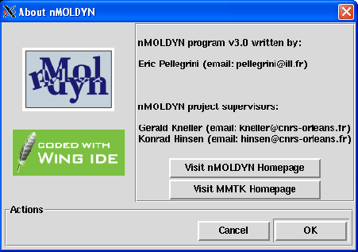

Next: Using nMOLDYN from the
Up: The Help menu
Previous: Analysis benchmark
Contents
About nMOLDYN
Pressing the About nMOLDYN button will just pop up the dialog showed in figure 4.70 from which
general information about nMOLDYN are displayed (e.g. authors, nMOLDYN and MMTK webpages ...).
Figure 4.70:
The dialog from which general information about nMOLDYN are displayed.
|

|
pellegrini eric
2009-10-06